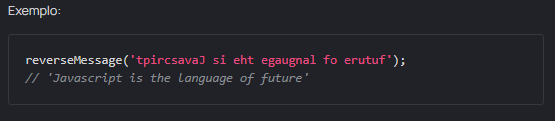
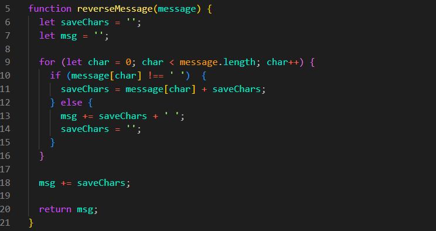

Arqueólogos fizeram uma nova descoberta. Rolos com registros
desconhecidos foram encontrados perto das ruínas de uma civilização
antiga que falava ao contrário. Parece que a língua dos seus vizinhos
era bastante similar, mas eles não falavam completamente ao contrário.
Eles soletravam apenas palavras ao contrário, não frases inteiras.
Descriptografar as mensagens deles é um trabalho bastante rotineiro,
concorda? Seria bom ter uma função reverseMessage que
pegasse a message, invertesse cada palavra e
retornasse a mensagem descriptografada.

Resultado
JS:

Explicacao Codigo:
Variaveis: let saveChars = ''; e
let msg = '';
let saveChars = ''; Criamos essa variavel vazia para
que ela possa ir recebendo os caracteres da palavra atual.
let msg = ''; Criamos essa variavel para receber a
mensagem completa já corrigida.
for (let char = 0; char < message.length; char++) {}
Com esse loop começamos pelo indice 0 (char) e,
enquanto char for menor que o tamanho da mensagem,
char++ avança de caractere em caractere até o final
da mensagem.
if (message[char] !== ' ') {}
Verifica se o caractere atual não é um espaço.
saveChars = message[char] + saveChars;
O caractere atual é colocado antes do conteúdo que já
existe em saveChars. Assim, a cada volta do loop, o
novo caractere entra na frente e a palavra é invertida.
else
Se não entrou no if, significa que encontramos um
espaço e a palavra terminou.
msg += saveChars + ' '; Adicionamos a palavra
invertida em msg junto com um espaço.
saveChars = ''; Resetamos
saveChars para que ele possa começar a armazenar a
próxima palavra.
Por fim, temos msg += saveChars;. Isso adiciona a
última palavra, que não possui um espaço depois dela, e então fazemos
return msg;.